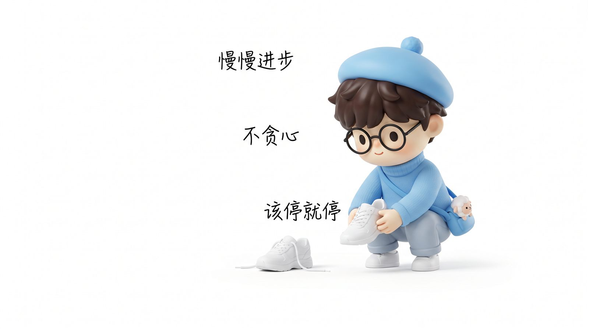
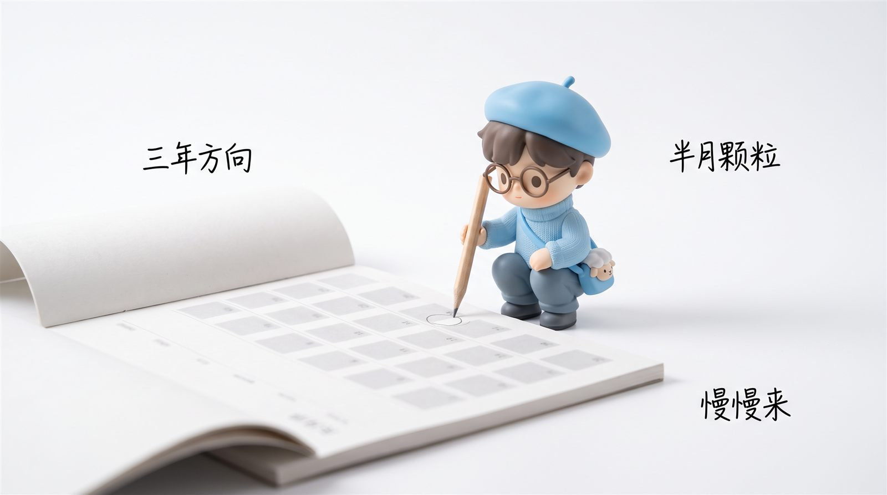
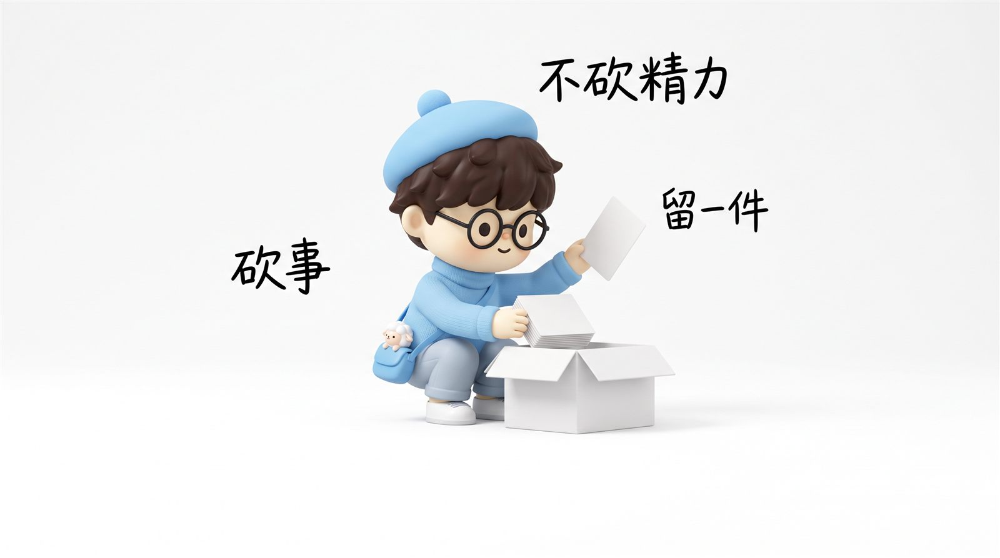
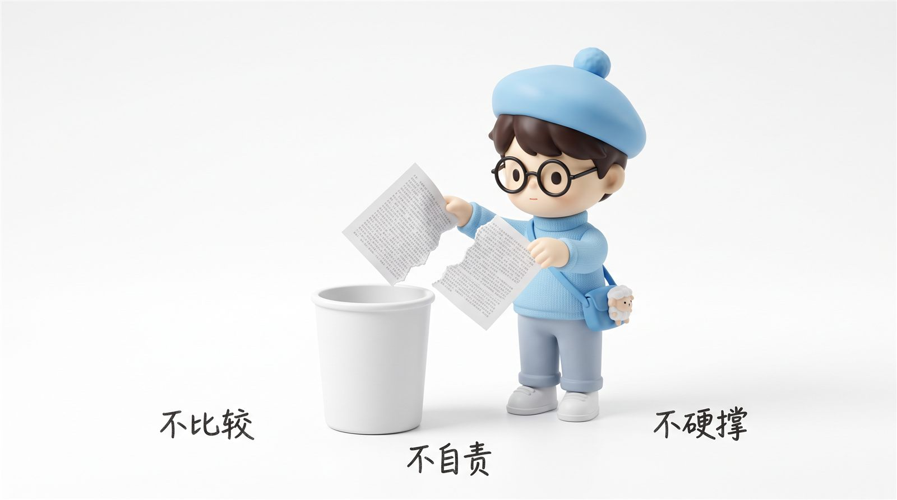

cat 精力与节奏.md
精力与节奏——接受自己慢慢进步，不 PUA 自己
2026-07-29 · 思考卡片 · 主线：欲望配比 → 计划空间 → 跑-停节奏 → 不PUA
核心命题
对自己的精力要有清晰的认知。要对自己干了这件事持续多久、干好要休息多久，有精准的判断——精准到稍微努力一点就能干到的计划空间。
接受自己慢慢进步，没有很多贪心，也不和同龄人比较。关注自己的节奏、身体、努力程度和欲望的配比。

节奏公式：三年方向，半月颗粒
大方向：每 3 年（1 个阶段目标）
↓
颗粒度：每半个月（可执行动作）
↓
弹性系数：稍微努力一点（不爆肝）
↓
跑-停调节：身体 / 脑力不佳 → 想停就停
关键：不是"天天跑"，是"该跑跑，该停停"——跑和停都是计划的一部分，停下来的不是偷懒。

件套一：精力-欲望配比
想要多少 → 能干多少 → 欲望超过精力就砍欲望，不是压精力。
每天先问自己："我今天想干的事，配得着我现在的精力吗？"不配就砍事，不是砍精力。比如今天想写 2 篇卡片 + 1 张图 + 1 个口播稿 → 砍成 1 + 1。

件套二：计划空间
计划不是死任务，计划是"稍微努力一点就够得着"的弹性范围。15 分钟能干的，不要排成 30 分钟；3 天能学完的，不要排成 1 天爆肝。
件套四：不 PUA 自己
心理契约三件套：不比较、不自责、不硬撑。
- 不比较不和同龄人比，不跟昨天的自己比产量，只跟自己的节奏比。
- 不自责已经发生的事已是事实，只调整下次，不复盘自责。
- 不硬撑身体脑力不佳时，不干比硬干好——想停就停，是计划的一部分。

接受自己慢慢进步，不要 PUA 自己——
该跑跑，该停停，停是计划的一部分。